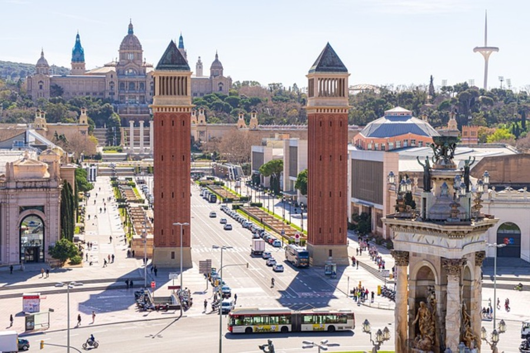

Descobreix Barcelona, una ciutat plena d'encant, rica en cultura i amb monuments increïbles com la Sagrada Família, el Parc Güell i el barri Gòtic. Una experiència única al cor del Mediterrani.
Barcelona és una de les ciutats més vibrants del món. Situada a la costa mediterrània, aquesta ciutat combina història, art i modernitat. Aquí trobaràs una infinitat d'atraccions culturals, platges increïbles i una gastronomia única.
La Sagrada Família, obra mestra d'Antoni Gaudí, és una basílica icònica de Barcelona i Patrimoni de la Humanitat. Amb el seu estil modernista únic i les impressionants torres, és un dels monuments més visitats del món i un símbol de la ciutat.
Més informacióEl Parc Güell, dissenyat per Antoni Gaudí, és un icònic parc de Barcelona que combina natura i arquitectura modernista. Destaca pels seus mosaics, el banc ondulat i la famosa salamandra.
Més informacióLa Rambla és el passeig més famós de Barcelona, que connecta la plaça Catalunya amb el port. Ple de vida, ofereix botigues, restaurants, artistes de carrer i llocs emblemàtics com el Mercat de la Boqueria i el Gran Teatre del Liceu.
Més informació